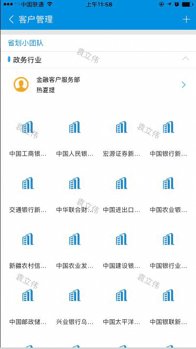
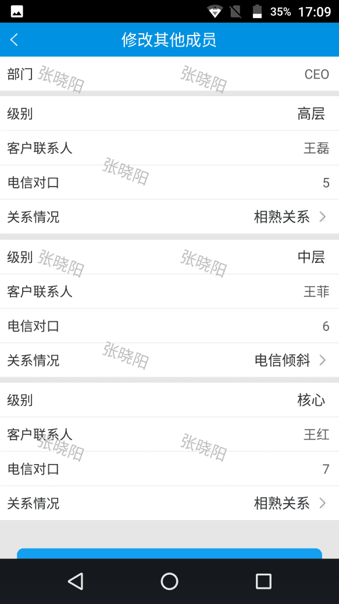

-
1 集团直管客户
使用不同角色或部门的人员登录销售助手，在客户管理->集团直管客户中所能看到的数据都不一样。
操作：首页- -客户管理- -集团直管客户。

-
2 省划小团队
使用不同角色或部门的人员登录销售助手，在客户管理->省划小团队中所能看到的数据都不一样。
操作：首页- -客户管理- -省划小团队
 -
3 扩展信息编辑
在集团直管客户与省划小团队中，当前所选择的逻辑客户的客户经理与当前登录账号同名，且所选择的逻辑客户与对应绑定的产权客户同名的情况下，点击客户进入客户信息页面，点击扩展信息；如图：
操作：首页- -客户管理- -集团直管客户或省划小团队->扩展信息
3.1 员工数修改或新增
扩展信息页面，点击编辑按钮，跳转到员工数页面，输入数字后点击【确认】，回到扩展信息页面并且员工数已存在；如图：
操作：首页- -客户管理- -集团直管客户或省划小团队->扩展信息->员工数
3.2 信息化决策信息
操作：首页- -客户管理- -集团直管客户或省划小团队->扩展信息->信息化决策信息->点击【>】->选择总部决策型->【确定】

3.3 业务渗透阶段
操作：首页- -客户管理- -集团直管客户或省划小团队->扩展信息->业务渗透阶段->点击【>】->选择业务渗透阶段类型->【确定】
3.4 班子成员
3.4.1 编辑按钮
操作：首页- -客户管理- -集团直管客户或省划小团队->扩展信息->班子成员->点击【修改】->点击要修改的班子成员->修改姓名、电信对口、关系情况->【确定】
3.4.2 删除按钮
操作：首页- -客户管理- -集团直管客户或省划小团队->扩展信息->班子成员->点击【删除】->选中要删除的班子成员->【删除】或【取消】
3.4.3 新建按钮
操作：首页- -客户管理- -集团直管客户或省划小团队->扩展信息->班子成员->点击【新建】->输入姓名、电信对口、关系情况->【确定】
3.5 其他成员
3.5.1 编辑按钮
操作：首页- -客户管理- -集团直管客户或省划小团队->扩展信息->班子成员->点击【修改】->点击要修改的班子成员->修改姓名、电信对口、关系情况->【确定】
3.5.2 删除按钮
3.5.3 新建按钮
操作：首页- -客户管理- -集团直管客户或省划小团队->扩展信息->其他成员->点击【新建】->输入姓名、电信对口、关系情况->【确定】
3.6 业务渗透-非移动业务
3.6.1 编辑按钮
操作：首页- -客户管理- -集团直管客户或省划小团队->扩展信息->业务渗透-非移动业务->点击【修改】->点击要修改的业务渗透-非移动业务->修改页面信息->【确定】
3.6.2 删除按钮
操作：首页- -客户管理- -集团直管客户或省划小团队->扩展信息->业务渗透-非移动业务->点击【删除】->选中要删除的业务渗透-非移动业务->【删除】或【取消】
3.6.3 新建按钮
操作：首页- -客户管理- -集团直管客户或省划小团队->扩展信息->业务渗透-非移动业务->点击【新建】->输入信息情况->【确定】
3.7 客户信息概述
操作：首页- -客户管理- -集团直管客户或省划小团队->扩展信息->客户信息概述->点击【编辑】->输入信息情况->【确认】
-
4 走访信息
4.1 走访记录
操作：首页- -客户管理- -集团直管客户或省划小团队->走访信息
4.1.1 走访记录新建
操作：首页->客户管理- -集团直管客户或省划小团队->走访信息->走访记录->新建->输入信息后->【确认】
4.1.2 走访记录编辑
操作：首页->客户管理- -集团直管客户或省划小团队->走访信息->走访记录->选择一条点击修改->输入信息后->【确认】
4.2 企业上云
操作：首页- -客户管理- -集团直管客户或省划小团队->走访信息->企业上云->编辑->提交